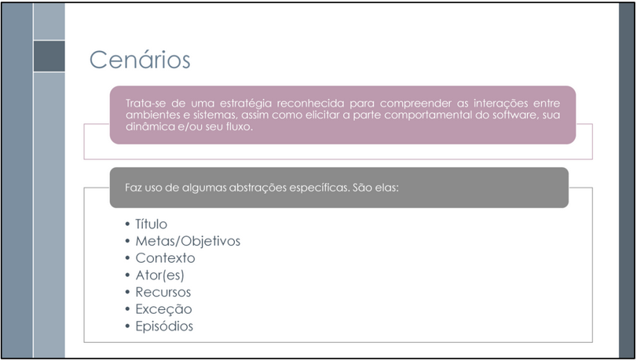

Cenário¶
Introdução¶
Este documento mostra os cenários de uso, ou seja, situações que representam como o usuário utilizaria o sistema. Cada cenário descreve uma ação do usuário e mostra como as funções que ainda não existem no SAE seriam usadas no dia a dia. Esses cenários foram criados para entender melhor os requisitos funcionais não-implementados e como eles vão interagir com o usuário quando forem adicionados ao sistema.
Integrantes do Grupo¶
A Tabela 1 apresenta todos os integrantes da equipe que participaram da construção dos Cenários, juntamente com a descrição das atividades que cada um desenvolveu durante o projeto.
| Nome | Quais etapas participou |
|---|---|
| Arthur Guilherme | Criou os cenários 07, 08 e 09, referente aos requisitos RF50, RF51 e RF52 |
| Arthur Henrique | Criação dos cenários 12 e 13, referentes, respectivamente aos requisitos RF16 e RF21 |
| Felipe Guimaraes | Criou os cenários 01, 02 e 03, referente aos requisitos RF08, RF09 e RF10 |
| João Felipe | |
| João Sapiência | Criou os cenários 17, 18 e 19, referente aos requisitos RF32, RF34 e RF40 |
| Tiago Lemes | Criação do documento de Cenário e criação dos cenários 04, 05 e 06, que são referentes, respectivamente, aos requisitos RF15, RF19 e RF20. |
| Vilmar José | Criação dos cenários 10 e 11, referentes, respectivamente aos requisitos RF11 e RF13 |
Metodologia¶
A metodologia usada nesta documentação segue os conceitos e a estrutura mostrados nos slides da aula “Requisitos – Aula 10”, de Milene Serrano e Maurício Serrano, disponíveis clicando aqui.
Cada cenário foi criado com base na identificação dos requisitos funcionais que ainda não foram implementados no sistema.
Foram aplicadas abstrações para tornar a documentação clara, organizada e de fácil compreensão, conforme o modelo apresentado no material de apoio, ilustrado na Figura 1.

A estrutura adotada para cada cenário seguiu uma padronização em formato de tabela, baseando-se nos seguintes elementos:
- ID: Identificador único do cenário, usado para facilitar seu rastreamento e manutenção. Segue o padrão “CE”, referente ao cenário, junto ao número do cenário. Exemplo:
CE07. - Título: Nome do cenário, geralmente relacionado ao objetivo principal ou ao requisito funcional ainda não implementado.
- Metas/Objetivos: Explica o propósito do cenário e o que se espera alcançar com a futura implementação da funcionalidade.
- Contexto: Define a situação e o ambiente em que o cenário ocorre, estabelecendo as pré-condições para o fluxo de eventos.
- Ator(es): Indica as pessoas, sistemas ou entidades que interagem diretamente com a funcionalidade descrita.
- Recursos: Lista as ferramentas ou componentes do sistema necessários para executar o cenário.
- Exceções: Aponta situações inesperadas ou problemas que podem interromper o fluxo normal do cenário.
- Restrições: Mostra as limitações, regras de negócio ou condições que devem ser respeitadas durante a execução.
- Episódios: Descreve, passo a passo, o fluxo principal de ações e decisões realizadas pelos atores no cenário.
A padronização da tabela se baseou nesses elementos apresentados acima e pode ser observada na Tabela 2.
| Elemento | Descrição |
|---|---|
| ID | CEN° |
| Título | Nome do cenário, geralmente relacionado ao objetivo principal ou ao requisito funcional ainda não implementado. |
| Metas/Objetivos | Explica o propósito do cenário e o que se espera alcançar com a futura implementação da funcionalidade. |
| Contexto | Define a situação e o ambiente em que o cenário ocorre, estabelecendo as pré-condições para o fluxo de eventos. |
| Ator(es) | Indica as pessoas, sistemas ou entidades que interagem diretamente com a funcionalidade descrita. |
| Recursos | Lista as ferramentas ou componentes do sistema necessários para executar o cenário. |
| Exceções | Aponta situações inesperadas ou problemas que podem interromper o fluxo normal do cenário. |
| Restrições | Mostra as limitações, regras de negócio ou condições que devem ser respeitadas durante a execução. |
| Episódios | Descreve, passo a passo, o fluxo principal de ações e decisões realizadas pelos atores no cenário. |
Cenários¶
Cenário 01: Exibição do Progresso Geral na Disciplina¶
Requisito Associado: RF08 - A interface deve exibir um progresso em porcentagem do andamento da disciplina.
| Elemento | Descrição |
|---|---|
| ID | CE01 |
| Título | Progresso Geral da Disciplina |
| Metas/Objetivos | Permitir que o aluno visualize o quanto já avançou na disciplina, incentivando o acompanhamento contínuo e a conclusão dos conteúdos. |
| Contexto | O aluno acessa a plataforma e deseja entender seu progresso global dentro de uma disciplina específica. |
| Ator(es) | - Aluno - Sistema de controle de progresso |
| Recursos | - Banco de dados de atividades concluídas e pendentes - Módulo de cálculo de progresso - Interface de exibição gráfica (ex: barra de progresso ou percentual numérico) |
| Exceções | - Falha na atualização automática do progresso após novas atividades concluídas. - Dados inconsistentes no banco de atividades. |
| Restrições | - O progresso deve ser atualizado em tempo real após cada conclusão de atividade. - A interface deve ser clara e acessível em todos os dispositivos. |
| Episódios | 1. O aluno acessa a página da disciplina. 2. O sistema consulta os dados de atividades concluídas e pendentes. 3. Calcula o percentual de progresso. 4. Exibe o progresso em formato visual (porcentagem e/ou barra). |
Cenário 02: Exibição da Porcentagem de Acertos por Conteúdo¶
Requisito Associado: RF09 - A interface deve exibir como está a porcentagem de acertos das atividades de cada conteúdo.
| Elemento | Descrição |
|---|---|
| ID | CE02 |
| Título | Desempenho de Acertos por Conteúdo |
| Metas/Objetivos | Fornecer ao aluno uma visão detalhada de seu desempenho em cada conteúdo, destacando pontos fortes e incentivando o aprimoramento. |
| Contexto | O aluno deseja acompanhar sua taxa de acertos em cada conteúdo para entender onde está indo bem e onde precisa melhorar. |
| Ator(es) | - Aluno - Sistema de monitoramento de desempenho |
| Recursos | - Banco de dados de resultados das atividades - Módulo de cálculo de desempenho - Interface de exibição de desempenho (gráficos ou indicadores numéricos) |
| Exceções | - Dados incompletos de atividades podem afetar o cálculo da porcentagem. - Atividades ainda não corrigidas não entram no cálculo. |
| Restrições | - A porcentagem deve ser atualizada automaticamente após a correção de cada atividade. - Deve ser exibida de forma compreensível e visualmente intuitiva. |
| Episódios | 1. O aluno acessa o banco de questões. 2. O sistema calcula o percentual de acertos em cada conteúdo. 3. Exibe a porcentagem de forma gráfica ou numérica. |
Cenário 03: Exibição da Porcentagem de Erros por Conteúdo¶
Requisito Associado: RF10 - A interface deve exibir como está a porcentagem de erros das atividades de cada conteúdo.
| Elemento | Descrição |
|---|---|
| ID | CE03 |
| Título | Desempenho de Erros por Conteúdo |
| Metas/Objetivos | Permitir que o aluno identifique conteúdos com maiores índices de erro, auxiliando no direcionamento dos estudos e revisões. |
| Contexto | O aluno quer verificar em quais conteúdos tem mais dificuldades, observando a taxa de erros. |
| Ator(es) | - Aluno - Sistema de monitoramento de desempenho |
| Recursos | - Banco de dados de atividades e resultados - Módulo de cálculo de desempenho - Interface de exibição de desempenho (gráficos ou indicadores numéricos) |
| Exceções | - Falha no registro correto dos resultados das atividades. - Atividades ainda não finalizadas não devem ser contabilizadas. |
| Restrições | - O cálculo deve considerar apenas atividades concluídas. - A exibição deve ser clara e comparável entre diferentes conteúdos. |
| Episódios | 1. O aluno acessa o banco de questões. 2. O sistema identifica a quantidade de erros em cada atividade. 3. Calcula a porcentagem de erros por conteúdo. 4. Exibe a porcentagem de forma gráfica ou numérica. |
Cenário 04: Lembretes de Revisão de Conteúdos¶
Requisito Associado: RF15 - O sistema deve enviar notificações para lembrar o usuário de revisar conteúdos passados.
| Elemento | Descrição |
|---|---|
| ID | CE04 |
| Título | Notificações de Revisão de Conteúdos |
| Metas/Objetivos | Garantir que o aluno seja lembrado de revisar conteúdos estudados anteriormente, promovendo aprendizado contínuo. |
| Contexto | O aluno acessa a plataforma periodicamente e deseja receber lembretes automáticos sobre conteúdos já concluídos. |
| Ator(es) | - Aluno - Sistema de notificações da plataforma |
| Recursos | - Banco de dados de conteúdos concluídos - Mecanismo de envio de notificações ( notificações push, mensagens pelo WhatsApp, e-mails e alertas na interface do sistema ou no aplicativo ) |
| Exceções | - Falha no envio da notificação. - Conteúdo revisado recentemente não gera novo lembrete. |
| Restrições | - As notificações devem respeitar as preferências de comunicação do aluno. |
| Episódios | 1. O sistema identifica conteúdos já estudados. 2. Envia lembrete ao aluno para revisar o conteúdo. |
Cenário 05: Configuração da Forma de Notificação¶
Requisito Associado: RF19 - O sistema deve pedir ao usuário a melhor forma de caminho de notificação.
| Elemento | Descrição |
|---|---|
| ID | CE05 |
| Título | Escolha da Forma de Notificação |
| Metas/Objetivos | Permitir que o usuário defina sua preferência de comunicação para receber notificações ( notificações push, mensagens pelo WhatsApp, e-mails e alertas na interface do sistema ou no aplicativo ). |
| Contexto | O usuário acessa a plataforma e quer receber alertas e lembretes da forma que considera mais conveniente. |
| Ator(es) | - Aluno - Docente - Monitor - Coordenador - Administrador - Sistema de configuração de notificações |
| Recursos | - Painel de preferências do usuário - Mecanismo de envio de notificações configurável |
| Exceções | - Usuário não escolhe forma de notificação, permanecendo a padrão. - Opção selecionada não está disponível no momento do envio. |
| Restrições | - Sistema deve garantir que as notificações sejam enviadas conforme a escolha do aluno. - Preferência deve ser atualizável a qualquer momento. |
| Episódios | 1. O usuário acessa a seção “Preferências de Notificação”. 2. Escolhe o canal preferido ( notificações push, mensagens pelo WhatsApp, e-mails e alertas na interface do sistema ou no aplicativo ). 3. Sistema salva a configuração e envia notificações conforme a escolha. |
Cenário 06: Notificação de Prazo de Entrega¶
Requisito Associado: RF20 - O sistema deve enviar uma notificação quando está chegando perto da data de entrega de uma atividade.
| Elemento | Descrição |
|---|---|
| ID | CE06 |
| Título | Alertas de Prazos de Entrega |
| Metas/Objetivos | Informar o aluno sobre atividades com prazo próximo, evitando atrasos na entrega. |
| Contexto | Um aluno possui atividades agendadas na plataforma e deseja receber alertas próximos ao prazo final. |
| Ator(es) | - Aluno - Sistema de notificações da plataforma |
| Recursos | - Banco de dados de atividades e prazos - Sistema de envio de notificações ( notificações push, mensagens pelo WhatsApp, e-mails e alertas na interface do sistema ou no aplicativo ) |
| Exceções | - Falha no envio do alerta. - Prazo da atividade é alterado após envio da notificação. |
| Restrições | - Notificações devem ser enviadas com antecedência suficiente para ação do aluno. - Devem respeitar as preferências de comunicação do usuário. |
| Episódios | 1. O sistema verifica atividades próximas do prazo. 2. Gera alerta de prazo para cada atividade. 3. Envia notificação ao aluno. |
Cenário 07: Análise Cognitiva e Apoio à Aprendizagem¶
Requisito Associado: RF50 - O sistema deve analisar documentos escolares(atividades e provas) para identificar dificuldades cognitivas e sugerir estratégias de reforço ao aluno.
| Elemento | Descrição |
|---|---|
| ID | CE07 |
| Título | Análise Cognitiva e Apoio à Aprendizagem |
| Metas/Objetivos | Avaliar a situação cognitiva de cada aluno e oferecer suporte personalizado para melhorar o processo de aprendizagem. |
| Contexto | O sistema educacional utiliza algoritmos de inferência cognitiva para analisar documentos escolares (provas e atividades) e identificar dificuldades específicas de cada aluno. Com base nessa análise, o assistente virtual sugere estratégias de reforço ao aluno. |
| Ator(es) | - Aluno - Professor - Assistente Virtual |
| Recursos | - Módulo de análise documental - Algoritmos de inferência cognitiva - Banco de dados de desempenho escolar |
| Exceções | - Documentos insuficientes para análise - Dados inconsistentes ou corrompidos |
| Restrições | A análise deve respeitar a privacidade dos dados dos alunos e seguir diretrizes pedagógicas. |
| Episódios | 1. O sistema acessa os documentos escolares do aluno. 2. Identifica padrões de dificuldade. 3. Sugere conteúdo adaptados para suas dificuldades. 4. Monitora a evolução do aluno ao longo do tempo. |
Cenário 08: Identificação de Conhecimento sobre o Conteúdo¶
Requisito Associado: RF51 - O sistema deve apresentar ao professor qual aluno sabe sobre o conteúdo, com base em provas e atividades.
| Elemento | Descrição |
|---|---|
| ID | CE08 |
| Título | Identificação de Conhecimento sobre o Conteúdo |
| Metas/Objetivos | Permitir ao professor visualizar o nível de domínio de conteúdo de cada aluno com base em provas e questões, utilizando Lógica Fuzzy para gerar uma análise graduada e confiável. |
| Contexto | Após a realização de atividades avaliativas, o sistema processa os resultados e apresenta ao professor uma visão detalhada do desempenho dos alunos por conteúdo. A análise é feita por meio de Lógica Fuzzy, permitindo identificar quais alunos dominam ou têm dificuldades em cada tema. |
| Ator(es) | - Professor - Sistema de Avaliação Inteligente |
| Recursos | - Banco de questões por conteúdo - Sistema de correção automática - Módulo de inferência com Lógica Fuzzy - Painel de desempenho por aluno |
| Exceções | - Provas não corrigidas ou com erros - Dados insuficientes para inferência confiável |
| Restrições | A visualização deve ser clara, pedagógica e respeitar a privacidade dos alunos. |
| Episódios | 1. Os alunos realizam provas e atividades. 2. O sistema aplica Lógica Fuzzy para avaliar o domínio por conteúdo. 3. O professor acessa o painel de desempenho dos alunos. 4. O sistema apresenta níveis de conhecimento e destaca alunos com dificuldades. |
Cenário 09: Avaliação de Comportamento Escolar¶
Requisito Associado: RF52 - O sistema deve informar ao professor quais alunos mantêm comportamento adequado segundo critérios pedagógicos.
| Elemento | Descrição |
|---|---|
| ID | CE09 |
| Título | Avaliação de Comportamento Escolar |
| Metas/Objetivos | Apresentar ao professor quais alunos mantêm comportamento adequado com base em critérios como presença nas aulas, participação em monitorias, realização de atividades e estudo dos conteúdos sugeridos. |
| Contexto | O sistema educacional monitora continuamente o comportamento dos alunos por meio de registros de presença, entregas de atividades, participação em monitorias e acesso aos conteúdos recomendados. O assistente virtual analisa esses dados e gera relatórios que ajudam o professor a identificar alunos engajados e aqueles que precisam de acompanhamento. |
| Ator(es) | - Aluno - Professor - Assistente Virtual |
| Recursos | - Registro de frequência - Plataforma de entrega de atividades - Sistema de monitoria - Módulo de rastreamento de estudo de conteúdos sugeridos |
| Exceções | - Dados incompletos ou não sincronizados - Aluno ausente em todas as atividades avaliadas |
| Restrições | O sistema deve garantir a integridade e atualização dos dados, respeitando normas de privacidade e acessibilidade. |
| Episódios | 1. O sistema registra a presença do aluno nas aulas. 2. Monitora a participação em sessões de monitoria. 3. Verifica a entrega de atividades e prazos. 4. Acompanha o acesso e estudo dos conteúdos sugeridos. 5. O assistente virtual analisa os dados e gera um relatório de comportamento. 6. O professor acessa o relatório e identifica os alunos com comportamento adequado. |
Cenário 10: Visualização da Média Geral da Turma por Atividade¶
Requisito Associado: RF11 - A interface deve exibir a média geral da turma em cada atividade
| Elemento | Descrição |
|---|---|
| ID | CE10 |
| Título | Visualização da Média Geral da Turma por Atividade |
| Metas/Objetivos | - Para o professor: Analisar o desempenho agregado da turma em cada avaliação, facilitando a identificação de dificuldades de aprendizagem - Para o aluno: Permitir que compare seu próprio desempenho com a média geral da turma, servindo como um parâmetro para seus estudos. |
| Contexto | Um usuário (professor ou aluno) está autenticado no sistema de gestão de aprendizagem e acessou a área de atividades de uma disciplina. Ele escolhe uma das atividades e verifica se as notas já foram lançadas e a média calculada. |
| Ator(es) | - Professor - Aluno |
| Recursos | - Banco de dados de atividades - Bance de dados de resultados de atividades |
| Exceções | - Cálculo Indisponível: A média não pode ser exibida se nenhuma nota foi lançada para a atividade. - Erro de Carregamento: A página de notas falha ao carregar devido a um problema de conexão ou erro no servidor. |
| Restrições | - A média deve ser calculada considerando apenas os alunos que receberam uma nota. - Os alunos podem ver a média geral, mas não têm acesso às notas individuais de seus colegas. |
| Episódios | 1. O usuário (professor ou aluno) acessa a plataforma e navega até a disciplina desejada. 2. O usuário seleciona a opção "Atividades" no menu da disciplina. 3. O sistema exibe uma lista com todas as atividades avaliativas. 4. Para cada atividade, o sistema exibe a nota individual do aluno (se for o aluno logado) e, em uma coluna separada, a "Média da Turma". 5. O usuário utiliza essa informação para fins de análise de desempenho (seja da turma ou pessoal). |
Cenário 11: Personalização da Frequência de Alertas de Atividades Atrasadas¶
Requisito Associado: RF13 - O usuário deve escolher o tempo em que deseja receber alertas sobre atividades atrasadas
| Elemento | Descrição |
|---|---|
| ID | CE11 |
| Título | Personalização da Frequência de Alertas de Atividades Atrasadas |
| Metas/Objetivos | Oferecer ao aluno a flexibilidade de configurar com que antecedência deseja ser notificado sobre atividades pendentes, a fim de melhorar sua gestão de tempo e reduzir o número de entregas em atraso. |
| Contexto | O usuário está logado em seu perfil no sistema e acessa a área de configurações de sua conta para ajustar suas preferências de notificação. |
| Ator(es) | Aluno |
| Recursos | - Banco de dados de atividades e prazos - Sistema de envio de notificações ( notificações push, mensagens pelo WhatsApp, e-mails e alertas na interface do sistema ou no aplicativo ) |
| Exceções | Falha ao Salvar: O sistema apresenta um erro e não consegue salvar as novas preferências de notificação devido a uma instabilidade na rede |
| Restrições | - O usuário deve ter um meio de contato válido cadastrado (e-mail ou permissão para notificação push) para receber os alertas. - As opções de tempo para os alertas são predefinidas pelo sistema (ex: "1 dia antes", "2 dias antes", "No dia do vencimento"). - A configuração é aplicada individualmente e não afeta as preferências de outros usuários. |
| Episódios | 1. O usuário acessa sua conta no sistema. 2. Ele seleciona a opção "Configurações". 3. Na página de configurações, ele navega até a seção "Notificações". 4. O sistema exibe uma lista de tipos de alerta que podem ser configurados. O usuário localiza a opção "Alertas sobre atividades atrasadas". 5. Ao lado desta opção, há um menu suspenso (dropdown) com os intervalos de tempo disponíveis. 6. O usuário clica no menu e seleciona a opção desejada (por exemplo, "1 dia após o vencimento"). 7. Após a seleção, o usuário clica no botão "Salvar" ou "Atualizar Preferências". 8. O sistema exibe uma mensagem de confirmação, como "Suas preferências de notificação foram salvas com sucesso". |
Cenário 12: Priorização de Conteúdo por Dificuldade¶
Requisito Associado: RF16 - O sistema deve ter um índice de conteúdos ordenado pela porcentagem de erros em cada conteúdo
| Elemento | Descrição |
|---|---|
| ID | CE12 |
| Título | Priorização de Conteúdo por Dificuldade da Turma |
| Metas/Objetivos | - Para o aluno: Ajudar a identificar e focar nos conteúdos onde a turma apresenta a maior porcentagem de erros, otimizando a preparação para avaliações. |
| Contexto | Um aluno está se preparando para uma prova e quer revisar os tópicos de forma mais eficiente. Ele decide acessar o índice de conteúdos para ver quais assuntos a turma, em geral, mais errou e que, portanto, merecem mais atenção. |
| Ator(es) | - Aluno |
| Recursos | - Banco de dados com resultados de atividades - Módulo de tagueamento de questões por conteúdo - Módulo de cálculo de percentuais de erro |
| Exceções | - Dados Insuficientes: O índice não pode ser gerado se poucas atividades foram respondidas pela turma. - Erro de Cálculo: O sistema falha ao processar as porcentagens de erro. |
| Restrições | - O índice deve ser baseado em dados anonimizados da turma, sem expor o desempenho individual de outros alunos. - A lista deve ser atualizada periodicamente para refletir os dados mais recentes. |
| Episódios | 1. O aluno acessa a plataforma e navega até a disciplina desejada. 2. O aluno seleciona a opção "Guia de Estudos" ou "Conteúdos". 3. O sistema calcula a porcentagem de erros da turma para cada tópico com base nas atividades já realizadas. 4. O sistema exibe uma lista com todos os conteúdos, ordenada do tópico com maior percentual de erro para o menor. 5. O aluno utiliza essa informação para priorizar seus estudos. |
Cenário 13: Personalização de Lembretes de Atividades¶
Requisito Associado: RF21 - O usuário escolhe quando ele recebe a notificação de proximidade da data de entrega de atividade
| Elemento | Descrição |
|---|---|
| ID | CE13 |
| Título | Personalização de Lembretes de Atividades |
| Metas/Objetivos | - Para o usuário: Dar controle sobre como e quando ele é notificado sobre os prazos, permitindo que o sistema se adapte ao seu método pessoal de organização. |
| Contexto | Um aluno prefere receber um único lembrete 3 dias antes do prazo final de uma atividade, em vez do padrão de 24 horas. Ele acessa as configurações do seu perfil para ajustar essa preferência de notificação. |
| Ator(es) | - Aluno (Usuário) |
| Recursos | - Painel de configurações do usuário - Banco de dados para armazenar preferências de notificação - Serviço agendador de notificações |
| Exceções | - Erro ao Salvar: O sistema não consegue salvar a preferência por uma falha no banco de dados. - Serviço Indisponível: O serviço de notificações está temporariamente fora do ar e não envia o lembrete agendado. |
| Restrições | - A configuração de notificação é individual e não deve afetar outros usuários. - As opções de tempo para o lembrete devem ser claras e pré-definidas (ex: 1 dia antes, 3 dias antes, etc.). |
| Episódios | 1. O usuário acessa a área de "Configurações" ou "Preferências" do seu perfil. 2. Ele navega até a seção "Notificações". 3. Na opção "Lembrete de entrega de atividade", ele altera a seleção padrão para a desejada (ex: "3 dias antes"). 4. O sistema confirma que a alteração foi salva com sucesso. 5. O serviço de notificação passa a utilizar essa nova configuração para os futuros lembretes deste usuário. |
Cenário 17: Organização de Materiais por Tópicos¶
Requisito Associado: RF32 - Os materiais devem estar postados em tópicos de conteúdos separados na disciplina.
| Elemento | Descrição |
|---|---|
| ID | CE17 |
| Título | Materiais Organizacionais por Tópicos |
| Metas/Objetivos | Garantir que os materiais de estudo sejam organizados e acessíveis por tópicos, facilitando a navegação e aprendizagem. |
| Contexto | O usuário acessa uma disciplina e deseja consultar materiais agrupados por tópicos específicos. |
| Ator(es) | - Aluno - Professor |
| Recursos | - Banco de dados de materiais - Interface de exibição por tópicos |
| Exceções | - Falha na categorização dos materiais. - Material inexistente ou corrompido. |
| Restrições | - Cada material deve estar vinculado a apenas um tópico. - Exibição deve ser clara e intuitiva. |
| Episódios | 1. O sistema organiza materiais por tópicos. 2. O aluno acessa a disciplina. 3. Navega pelos tópicos. 4. Visualiza materiais correspondentes. |
Cenário 18: Integração com Outros Softwares Educacionais¶
Requisito Associado: RF34 - O sistema deve integrar outros softwares educacionais (como AVAs).
| Elemento | Descrição |
|---|---|
| ID | CE18 |
| Título | Integração com Softwares Educacionais Externos |
| Metas/Objetivos | Permitir que conteúdos e atividades de outros softwares sejam acessíveis dentro da plataforma, centralizando o aprendizado. |
| Contexto | O aluno ou professor deseja acessar recursos de AVAs e outras plataformas educacionais diretamente pelo sistema. |
| Ator(es) | - Aluno - Professor - Sistema |
| Recursos | - APIs de integração com softwares externos - Banco de dados do sistema |
| Exceções | - Falha na comunicação com softwares externos. - Dados inconsistentes importados. |
| Restrições | - Apenas plataformas autorizadas devem ser integradas. - Integração segura e em tempo real. |
| Episódios | 1. O sistema conecta com o software externo. 2. Importa materiais e atividades. 3. Exibe conteúdo integrado aos usuários. 4. Usuário interage com materiais normalmente. |
Cenário 19: Customização do Assistente Virtual¶
Requisito Associado: RF40 - O assistente virtual deve ser customizável pelo usuário.
| Elemento | Descrição |
|---|---|
| ID | CE19 |
| Título | Customização do Assistente Virtual |
| Metas/Objetivos | Permitir que o usuário personalize a aparência, comportamento e notificações do assistente virtual, aumentando engajamento e satisfação. |
| Contexto | O usuário deseja ajustar o assistente virtual de acordo com suas preferências. |
| Ator(es) | - Aluno |
| Recursos | - Interface de configuração do assistente - Banco de dados de preferências do usuário |
| Exceções | - Falha ao salvar configurações. - Alterações não aplicadas corretamente. |
| Restrições | - Configurações aplicam-se apenas ao usuário. - Devem respeitar limites técnicos da plataforma. |
| Episódios | 1. O usuário acessa a seção de customização. 2. Ajusta aparência, comportamento e notificações. 3. Salva preferências. 4. Assistente virtual se adapta às configurações. |
Gravação da validação do documento¶
Usuário entrevistado¶
Vale ressaltar que o usuário entrevistado se enquadra no nosso perfil de usuário
| Nome | Data | Hora | Local |
|---|---|---|---|
| João Igor | 09/10/2025 | 13:30 | Faculdade de Ciências e Tecnologias em Engenharia – FCTE/UnB |
Além disso, a gravação da validação pode ser visualizada em: https://youtu.be/WbPsxPIdTtg
Referências¶
SERRANO, Milene; SERRANO, Maurício. Requisitos - Aula 10. Disponível em: Requisitos_Aula 10. Acesso em: 10 outubro 2025.
Histórico de Versões¶
| Versão | Data | Descrição | Autor(es) | Revisor |
|---|---|---|---|---|
| 1.0 | 05/10/2025 | Criação do documento de cenários | Tiago Lemes | Felipe Guimaraes |
| 1.1 | 07/10/2025 | Criação dos cenários CE01, CE02 e CE03 | Felipe Guimaraes | Tiago Lemes |
| 1.2 | 08/10/2025 | Atualização de informações no documento | Tiago Lemes | Felipe Guimaraes |
| 1.3 | 08/10/2025 | Criação dos cenários CE07, CE08 e CE09 | Arthur Guilherme | Tiago Lemes |
| 1.4 | 08/10/2025 | Criação dos cenários CE10 e CE11 | Vilmar Fagundes | Arthur Henrique |
| 1.5 | 09/10/2025 | Criação dos cenários CE12 e CE13 | Arthur Henrique | Vilmar Fagundes |
| 1.6 | 09/10/2025 | Criação dos cenários CE17, CE18 e CE19 | João Sapiência | Tiago Lemes |